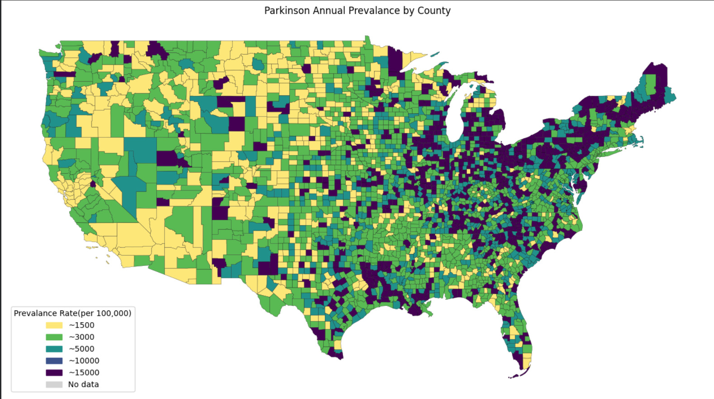
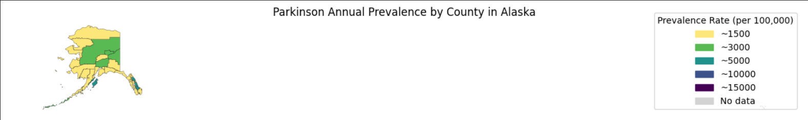
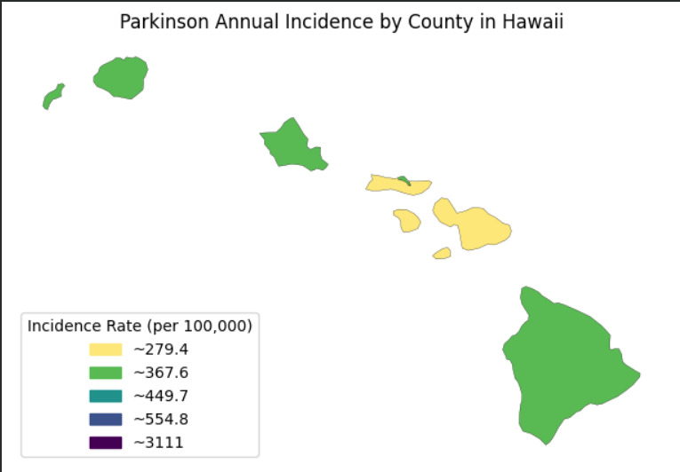
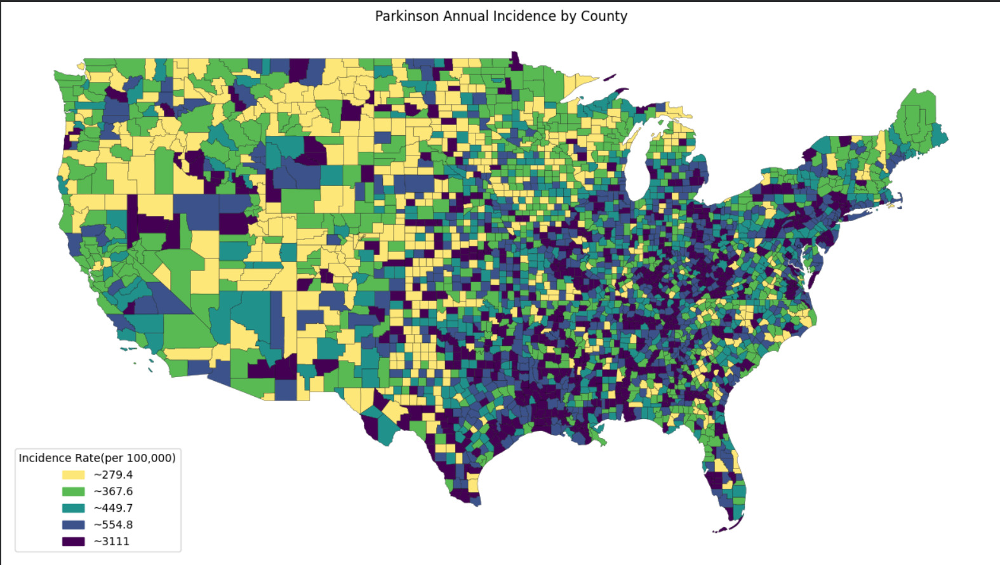
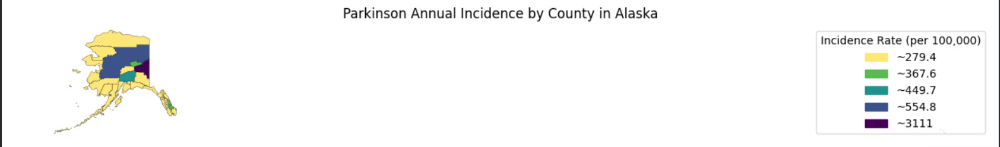

These maps display county‑level Parkinson’s disease prevalence and incidence rates across the U.S., including Alaska and Hawaii. Color gradients represent the concentration of diagnosed cases, helping identify regions with higher or lower disease burden.




